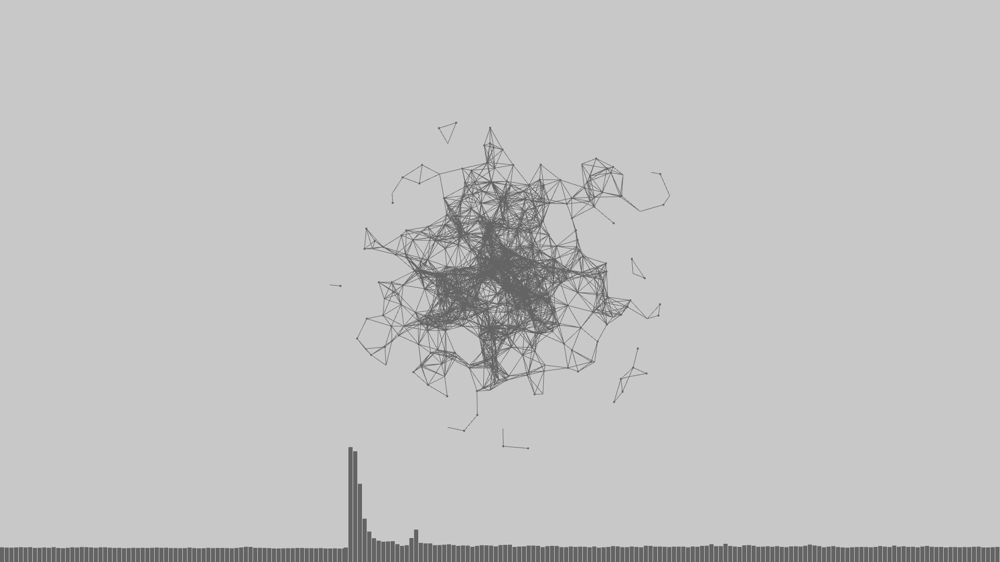
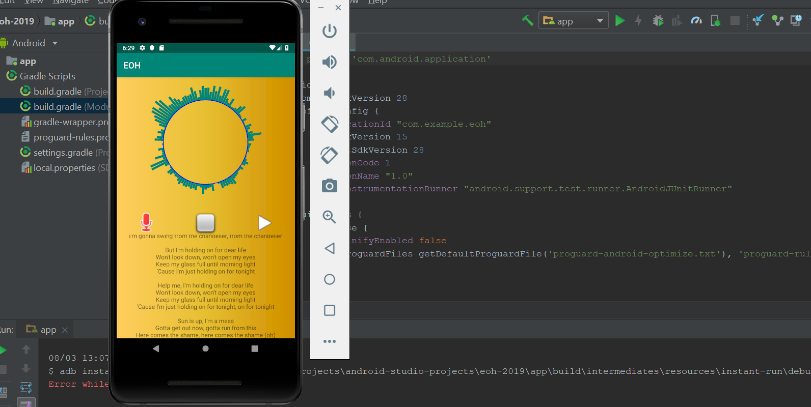

Projects

This application is an Audio Visualizer. The visualization is a collection of free-floating points
that connect to one another via lines once encountering a certain distance from each other while bars scroll across the bottom of the screen.
The speed and size of the points, the thickness of the lines that connect the points, and the rise and fall of the bars
are in accordance with the sound (using features such as Perlin Noise).

Karaoke is an Android application which converts audio files to a colored visual representation
and overlays the original track with user input in a different color. This application contains a song menu presenting
multiple songs for variability and utilizes a lyrics web api to fetch the corresponding songs' lyrics displayed on a multi-page
scrollable user interface.

This is a platform that educates voters on different candidates, and their stances on popular policies.
These are then represented in a line plot for voters to understand the policies that are emphasized by different political figures prior to the upcoming 2020
presidential election. The goal of this classifier is to inform users about the goals and priorities in relation to public policy of the political candidates.